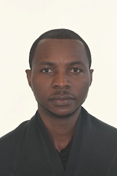

Steve Buamikusu KALALA | WDD 130
Hello! My name is Steve KALALA and I am from Kinshasa DRC, central of Africa. Currently living in Ottawa, Canada. I am a returning student at BYUPathway. Previously graduated in BYU-Idaho major BS in professional Studies. Now, I am changing my career path to "Bachelor of Applied Science Software Development" I am passionate in Web, Programming, and Software development. In D&C98:12 it says, 'God gives unto faithful line upon line, precept upon precept'. I know that this valuable skills that I am learning will help me to be a good provider for my family, community, and will help with Church callings. And the overall will make to be a true disciple leader of the Lord.